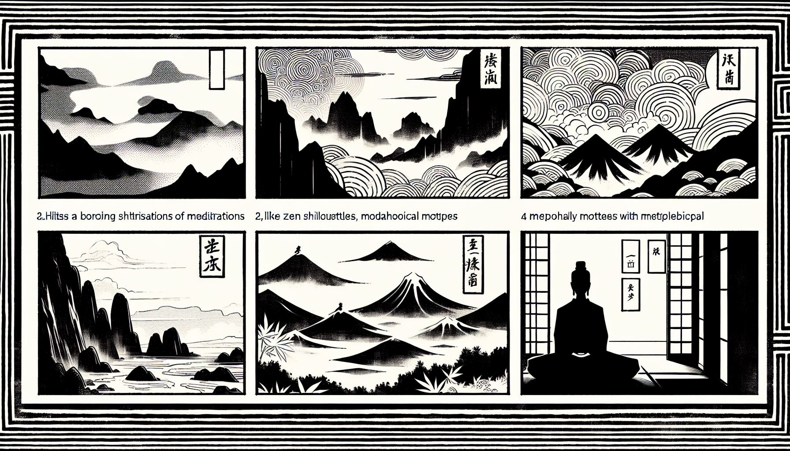

七十五巻 巻一覧
正法眼藏第59 家常
本紹介ページの導入・語彙・深掘り・クイズは tools/regen_volume_intro_from_corpus.py が OpenAI API で生成したものです（入力は当巻の原文からの短い抜粋のみ）。内容はモデル出力のため、重要箇所は必ず原文・教本と照合してください。
出典: https://shomonji.or.jp/zazen/doc/genzou.html
原文・現代語訳の全文は 全文ページを参照してください。
この巻の紹介（導入）
おほよそ佛祖の屋裡には、茶飯これ家常なり。この茶飯の儀、ひさしくつたはれて而今の現成なり。
このゆゑに、佛祖茶飯の活計きたれるなり。大陽山楷和尚、問投子曰、佛祖意句、如家常茶飯。
語彙の足場
- 家常：日常の生活や習慣を指し、特に仏教においては、日々の修行や実践を表す言葉として用いられる。
- 佛祖：仏教における尊敬される存在、特に釈迦牟尼仏を指すことが多い。
- 活計：生活のための活動や行為、特に日常的な行動を指す。
- 問投子：大陽山楷和尚が投子に問いかける場面を指し、禅問答の一環としての重要性を示す。
- 開悟：真理を理解し、心の目が開かれること。禅の修行において重要な概念。
原文（要点の抜粋）
当巻の冒頭付近からの短い抜粋です。長い引用は載せていません。 全文は全文ページを参照してください。出典はリポジトリ内 doc/正法眼蔵.txt です。原文の参照元: https://shomonji.or.jp/zazen/doc/genzou.html
おほよそ佛祖の屋裡には、茶飯これ家常なり。この茶飯の儀、ひさしくつたはれて而今の現成なり。このゆゑに、佛祖茶飯の活計きたれるなり。
大陽山楷和尚、問投子曰、佛祖意句、如家常茶飯。離此之餘、還有爲人言句也無（大陽山楷和尚、投子に問うて曰く、佛祖の意句は、家常茶飯の如し。此れと離れて餘に、還た爲人の言句有りや無や）。
投子曰、汝道、寰中天子敕、還假禹湯堯舜也無（汝道ふべし、寰中の天子敕するに、還た禹湯堯舜を假るや無や）。
大陽擬開口（大陽、開口を擬す）。
投子拈拂子掩師口曰、汝發意來時、早有三十棒分也（投子、拂子を拈じて師の口を掩ひて曰く、汝發意せしよりこのかた、早く三十棒の分有り）。
大陽於此開悟、禮拜便行（大陽、此に開悟し、禮拜して便ち行く）。
投子曰、且來闍梨。
大陽竟不囘頭（大陽、竟に囘頭せず）。
投子曰、子到不疑之地耶（子不疑の地に到れりや）。
大陽以手掩耳而去（大陽、手を以て耳を掩ひて去る）。
しかあれば、あきらかに保任すべし、佛祖意句は、佛祖家常の茶飯なり。家常の麁茶淡飯は、佛意祖句なり。佛祖は茶飯をつくる。茶飯、佛祖を保任せしむ。しかあれども、このほかの茶飯力をからず、このうちの佛祖力をつひやさざるのみなり。還假禹湯堯舜也無の見示を、功夫參學すべきなり。
離此之餘、還有爲人言句也無。この問頭の頂𩕳を參跳すべし。跳得也、跳不得也と試參看すべし。
図解（4コマ・AI生成）
教義の根拠は原文・出典に従い、漫画は比喩の補助に留めてください。

深掘り（読解の手掛かり）
- 佛祖の家常は茶飯であり、日常的な行為が仏教の教えに結びついている。
- 大陽山楷和尚と投子の問答は、禅の教えを深めるための重要な例である。
- 家常茶飯は、仏教の意義を理解するための象徴的な表現として機能している。
確認（形成評価）
各設問の下の「採点」で正誤を表示します（ブラウザ内のみ。ログは送りません）。